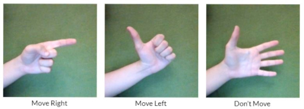

Welcom to my project for unit ARI2201. This is a recreation of the 1986 game Arkanoid, but instead of using regular controls, the bat is moved by using gesture controls. Below is a representation of the actions you can take and their corresponding actions.
